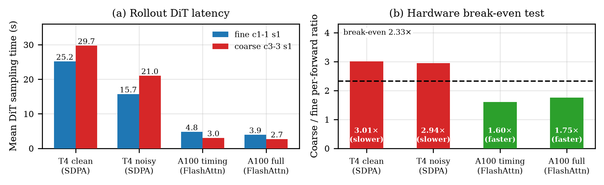
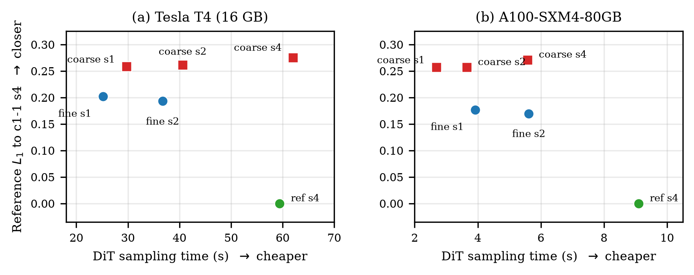
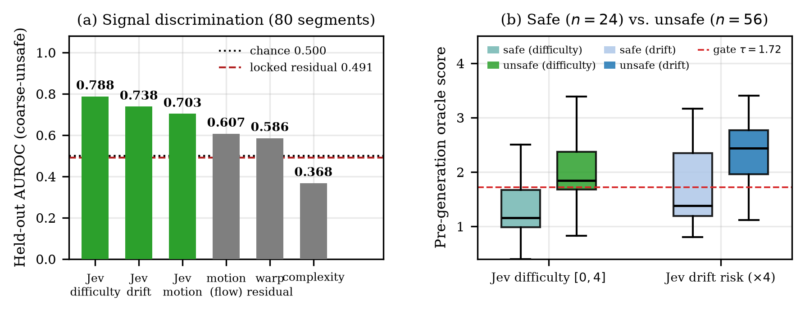
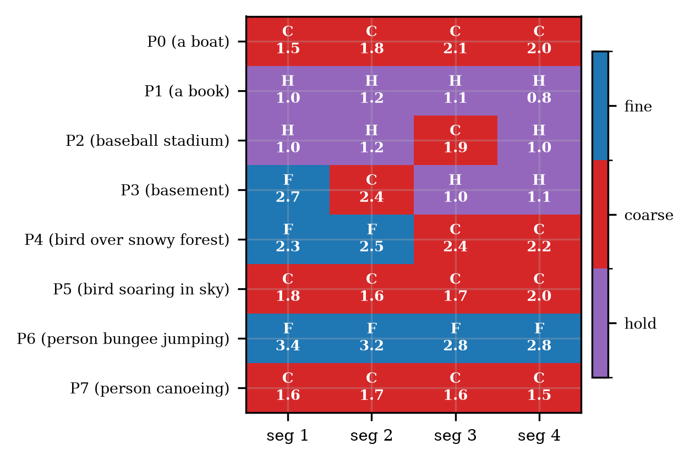
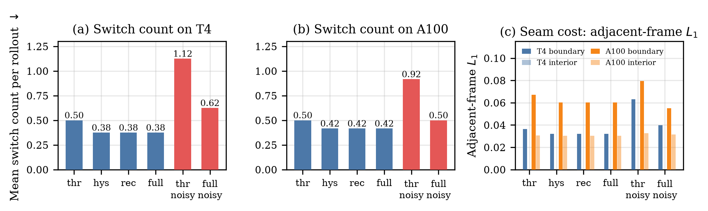
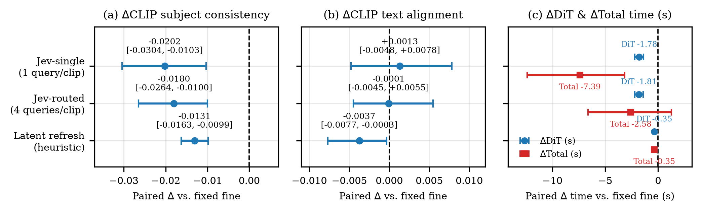
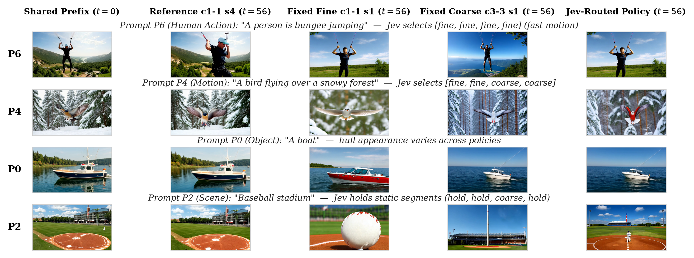

Jev-Routed Temporal Granularity with Recovery and Hysteresis for Causal Video Generation
GitHub repository Manuscript (PDF) Result figures Result videos
Overview
Causal video generators produce a rollout one temporal chunk at a time, which invites a simple efficiency idea: spend fine per-frame computation only where a segment is hard, and use cheaper coarse chunks, or even reuse, elsewhere. Realizing this idea requires three preconditions that are usually assumed rather than measured: a mode that is genuinely cheaper on the deployment hardware, a signal that predicts hard segments before generation, and an independent endpoint that certifies the trade. This project audits all three on Causal-rCM, a Wan2.1-1.3B text-to-video causal diffusion model, pairing a frame-wise mode with a chunk-3 mode and a near-zero-cost hold mode, and routing among them with a two-threshold controller with hysteresis and forced recovery. The audit runs on a Tesla T4 and an A100-SXM4-80GB, because the cost precondition turns out to be a property of the hardware, not of the model. Negative and failed experiments are preserved as evidence.
Key findings
- Hardware-conditional cost inversion. On the T4 each coarse forward is 3.01× a fine forward against a 2.33× break-even point, so coarse is never cheaper; on the A100 the ratio falls to 1.60–1.75 and coarse is 1.46× faster in DiT time.
- A preregistered hand-crafted signal fails; a text-only oracle succeeds. The locked residual signal reaches AUROC 0.491, whereas the Jev System One oracle reaches AUROC 0.788 [0.575, 0.946] at 0.67 s per decision, off the generation path.
- Recovery and hysteresis stabilize switching. Switches drop from 0.50 to 0.38 on the T4 and from 0.92 to 0.50 under signal noise on the A100, without worsening regret.
- A trade-off, not dominance. On 24 fresh A100 prompts a single-decision Jev policy saves 1.78 s of DiT time and 7.39 s of total time (both significant) at a small significant −0.020 CLIP subject-consistency cost.
- Monotonicity is signal- and endpoint-dependent. The fine-versus-coarse benefit is monotone in the Jev difficulty signal on the T4 but flat on the A100 diagnostic split.
Results

| Setting | fine s/fwd | coarse s/fwd | ratio | coarse cheaper? |
|---|---|---|---|---|
| T4, clean context | 1.32 | 3.58 | 3.01 | no |
| T4, noisy context | 0.71 | 2.10 | 2.94 | no |
| A100, timing arm | 0.125 | 0.200 | 1.60 | yes |
| A100, full-decode arm | 0.112 | 0.196 | 1.75 | yes |






Citation
@article{jisan2026jev,
title = {Jev-Routed Temporal Granularity with Recovery and Hysteresis for Causal Video Generation},
author = {Jisan, Hossen Md},
year = {2026},
note = {Manuscript prepared for IEEE Transactions on Circuits and Systems for Video Technology}
}